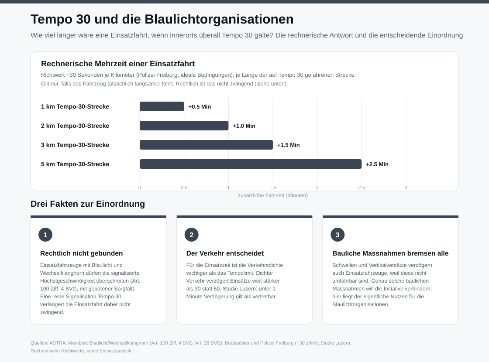

Initiativkomitee
Tatsachenbehauptungüberprüfbar an Daten und Texten
5 von 20 Punktenzur Übersicht
Temporeduktionen führen zu längeren Fahrzeiten für Busse, Krankenwagen, Feuerwehr und Polizei, die nicht behindert werden dürfen.
Aussage eines KomiteesInitiativkomitee, offizielles Argument im Abstimmungsmagazin
Fundstelle: Schaffhauser Abstimmungs-Magazin, «Argumente des Initiativkomitees», S. 13 · 2026
Quellenlage1
Zahlenfestigkeit0
Ursachennachweis2
Reichweite1
Übertragbarkeit1
Was zutrifftFür den Busverkehr trifft die Aussage zu. Publizierte Werte für die …
Für den Busverkehr trifft die Aussage zu. Publizierte Werte für die zusätzliche Fahrzeit bei Tempo 30 statt 50 auf Hauptstrassen:
- ASTRA: 2 Sekunden je 100 Meter, also 20 Sekunden je Kilometer.
- VCS: 15 Sekunden je Kilometer.
- SVI: rund 20 Sekunden je Kilometer.
- Messungen in der Stadt Zürich: 10 bis 30 Sekunden je Kilometer.
Der Kanton hält im Abstimmungsmagazin fest, eine Temporeduktion könne auf längeren Abschnitten die Reisezeit erhöhen, was für den öffentlichen Verkehr nachteilig sein kann.
Was fehlt1. Die Grössenordnung: Mit dem Richtwert von 30 Sekunden je Kilometer ergibt …
- Die Grössenordnung: Mit dem Richtwert von 30 Sekunden je Kilometer ergibt eine 1 km lange Tempo-30-Strecke 30 Sekunden Mehrzeit, 5 km ergeben 2,5 Minuten.
- Blaulichtfahrzeuge: Nach Art. 100 Ziff. 4 des Strassenverkehrsgesetzes dürfen Feuerwehr, Sanität und Polizei auf dringlicher Dienstfahrt mit Blaulicht und Wechselklanghorn die signalisierte Höchstgeschwindigkeit überschreiten. Eine Signalisation Tempo 30 verlängert die Einsatzfahrt nicht.
- Was Einsatzfahrzeuge bremst, sind bauliche Elemente wie Schwellen und Vertikalversätze, weil sie nicht umfahrbar sind. Die Initiative verhindert solche Elemente.
- Für die Einsatzzeit ist die Verkehrsdichte massgebender als das Tempolimit.
- Für den Bus trifft der Einwand zu, siehe Grafik.
Eigene Auswertung1 GrafikTempo 30 und die Blaulichtorganisationen

Kritische FragenFolgenargument3 Prüffragen zu diesem Argumenttyp, davon 3 offen oder nicht erfüllt
- Wie gross ist die Folge?offenkeine Zahl genannt
- Gilt die Folge für alle genannten Gruppen?nicht erfülltfür Blaulichtfahrzeuge im Einsatz gelten Sonderrechte
- Gibt es einen stärkeren Einflussfaktor?nicht erfülltder Kanton nennt die Ampelsteuerung